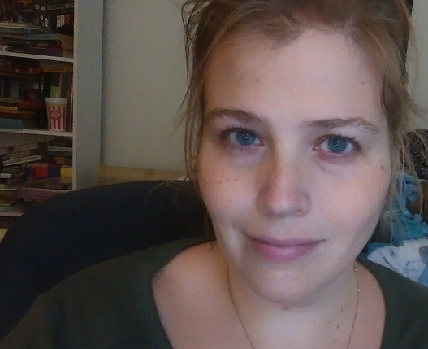

Ashley Hemm

I am a second-year PhD student in English at the University of Miami, where I study speculative fiction, fandom culture, and digital humanities. My scholarly interests tend to focus on networks and relationships, both within cultural artifacts such as books and visual media, as well as on a larger scale, as fans of these properties interact with one another and create artifacts of their own.
I am currently the UGrow Fellow at HistoryMiami, where I have been assisting the archives department with finding material for upcoming exhibits and assisting in cleaning metadata for a large-scale import of digital files. I am also a Research Assistant for WhatEvery1Says, a project coordinated between UC Santa Barbara, CSU Northridge, and University of Miami which studies public discourse about the humanities at a large scale.
You can also find me on Instagram>/a>, where I post pictures of archival material, food, and as many cats as I can find.